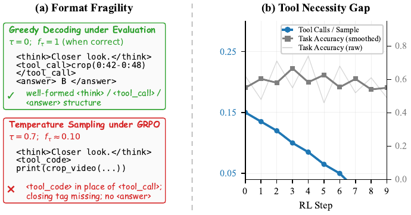
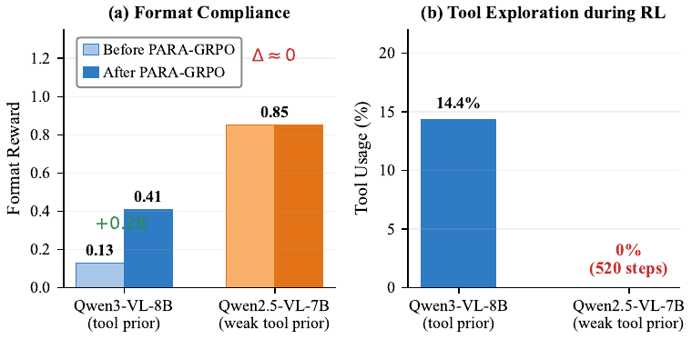
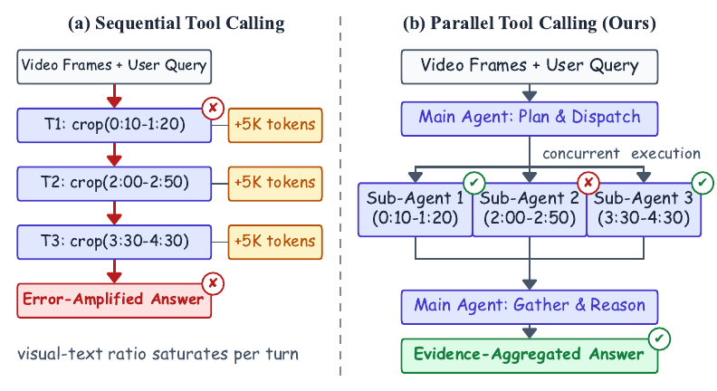
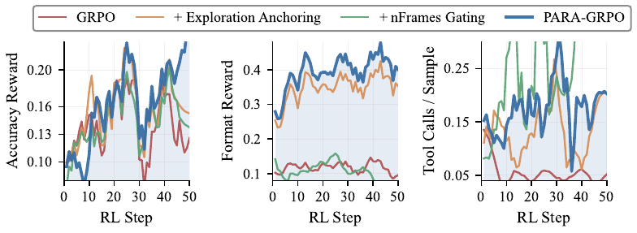

Can a large multimodal model learn to natively invoke tool calls in parallel under agentic RL — when the very prior that enables tool use also destabilizes it?
Long-video understanding is increasingly framed as agentic video reasoning: a large multimodal model (LMM) post-trained with reinforcement learning to invoke video-processing tools. Prior native-RL methods, including our earlier LongVT (CVPR 2026), dispatch these tool calls sequentially, one per turn, which is brittle to single mis-localizations, prone to multi-turn context drift, and linear in inference cost.

<think>/<tool_call>/<answer>
boundary closures decay, leaving rollouts that look almost-parseable but mis-tagged.
Tool Necessity Gap (right): with 64 overview frames many prompts can be answered
without tools, so the GRPO advantage between calling and skipping is near-zero, and the
parallel tool-call rate collapses within a few RL steps while accuracy oscillates flatly.

We introduce ParaVT, the first multi-agent end-to-end RL-trained framework for Parallel Video Tool calling: a main agent emits multiple temporal-window crops in a single turn, dispatches them to weight-sharing sub-agents, and aggregates the parallel evidence into a final answer. Applying standard GRPO to ParaVT surfaces two coupled failures driven by the same pretrained tool prior — Format Fragility (the SFT-learned structural tags collapse under temperature sampling) and the Tool Necessity Gap (the skip-tool reward shortcut). We name this trade-off the Tool Prior Paradox and tame it with PARA-GRPO (Parseability-Anchored and Ratio-gAted GRPO): a targeted format reward applied only at the structural-token positions most prone to collapse, paired with a per-prompt frame-budget randomization that lets calling the tool earn measurable RL credit. Across seven evaluation splits spanning six long-video benchmarks plus a temporal-grounding split, ParaVT sets a new open-source 7-8B SOTA on six of the seven, improving over the Qwen3-VL-8B base by +7.9% on average, with PARA-GRPO lifting training-time format compliance from 0.13 to 0.64.
A main agent emits one or more <tool_call> blocks in a single turn; each call
is handled by an independent sub-agent that shares weights with the main agent and returns a
short summary; the main agent aggregates the summaries into a final answer.
PARA-GRPO targets the structural-format collapse and the skip-tool reward shortcut that
vanilla GRPO surfaces on a tool-native LMM.

crop_video calls in one turn, each is processed by an
independent sub-agent, and a gather-and-reason pass produces the final answer.
Visual-token density inside one turn stays bounded as the number of crops grows.
<think>) on every response and credits the presence of a final
<answer> block via an Answer Suffix term, ruling out
blind direct answers and tool-only rollouts.
(ii) Selective Anchoring applies the targeted format reward only at the
structural-token positions struct(o) most prone to
collapse, leaving tool-call content tokens unconstrained.
All open-source rows were re-evaluated under a unified protocol (image_url channel, 64 frames, per-baseline native prompt). Best result in bold; underlined marks ParaVT's value when it is not the best column-wise. * withheld due to benchmark–training-data overlap. † native tool-call schema not reconcilable with Charades-STA grounding output.
| Model | VideoMME w/o sub |
VideoMME w/ sub |
LongVideo- Bench |
LVBench | MLVU | MMVU | Charades-STA test (mIoU) |
|---|---|---|---|---|---|---|---|
| Proprietary LMMs — best-setting numbers from official reports | |||||||
| GPT-4o | 71.9 | 77.2 | 66.7 | 34.7 | 64.6 | 66.7 | — |
| Gemini 1.5 Pro | 75.0 | 81.3 | 64.4 | 33.1 | 74.3 | 65.8 | — |
| Open Instruct LMMs — direct answer | |||||||
| Qwen2.5-VL-7B | 55.7 | 64.5 | 46.4 | 32.2 | 47.8 | 65.4 | 31.6 |
Open Reasoning LMMs — <think> → <answer> | |||||||
| Video-R1-7B | 57.6 | 66.0 | 57.4 | 36.9 | 61.6 | 61.3 | 25.4 |
| VideoChat-R1-7B | 50.4 | 58.2 | 49.2 | 23.8 | 58.7 | 65.0 | 31.5 |
| VideoRFT-7B | 58.5 | 65.6 | 55.1 | 38.0 | 44.9 | 42.7 | 18.7 |
| Time-R1-7B | 58.9 | 66.2 | 56.0 | 38.2 | 60.5 | 63.4 | 34.7 |
| ReWatch-R1-7B | 58.8 | 65.0 | 53.6 | 38.5 | 60.1 | 59.8 | 20.2 |
| Video-Thinker-7B | 61.9 | 65.3 | 56.0 | * | 65.2 | 64.5 | 29.0 |
Open Agentic LMMs — <think> → <tool_call> → <answer> | |||||||
| Qwen3-VL-8B | 59.9 | 68.4 | 52.2 | 33.1 | 58.3 | 68.0 | 49.3 |
| Conan-7B | 55.5 | 62.8 | 54.5 | 38.2 | 59.2 | 64.0 | 25.4 |
| LongVT-RFT-7B | 59.5 | 66.0 | 54.7 | 37.9 | 59.4 | 63.4 | 23.4 |
| SAGE-7B | 44.1 | 52.4 | 37.4 | 31.8 | 49.7 | 55.7 | 28.9 |
| VideoZoomer-7B | 45.3 | 48.3 | 39.6 | 22.9 | 46.2 | 61.6 | † |
| ParaVT-8B (Ours) | 62.1 | 69.4 | 60.4 | 39.8 | 65.0 | 68.6 | 50.1 |
Higher is better. ParaVT tops 6 of 7 columns and is within 0.2 pt of the best on MLVU. Avg over the seven columns: 59.3 for ParaVT vs. 55.6 for the Qwen3-VL-8B base (+7.9% relative).
Each row reports mean training-time format reward fτ at sampling temperature τ=0.7 and mean training-time tool-call rate per rollout κ. Curves on the right plot the same four runs step-by-step. Best result in bold; rows shaded grey mark the full PARA-GRPO recipe.
| Setting | fτ | κ | VideoMME w/o sub |
VideoMME w/ sub |
LV- Bench |
MLVU |
|---|---|---|---|---|---|---|
| (A) Training Stage | ||||||
| Qwen3-VL-8B | 0.03 | 0.45 | 59.9 | 68.4 | 33.1 | 58.3 |
| + SFT Cold-Start | 0.13 | 2.50 | 60.7 | 69.0 | 39.1 | 63.7 |
| + SFT + GRPO | 0.13 | 0.02 | 62.0 | 68.6 | 39.3 | 64.5 |
| + SFT + PARA-GRPO | 0.41 | 0.21 | 62.1 | 69.4 | 39.8 | 65.0 |
| (B) Component Effectiveness | ||||||
| SFT + GRPO | 0.13 | 0.02 | 62.0 | 68.6 | 39.3 | 64.5 |
| + Exploration Anchoring | 0.35 | 0.19 | 61.7 | 68.7 | 39.3 | 64.1 |
| + nFrames Gating | 0.10 | 1.36 | 61.3 | 68.7 | 39.1 | 63.6 |
| Full PARA-GRPO | 0.41 | 0.21 | 62.1 | 69.4 | 39.8 | 65.0 |
| − Tool Reward Rtool | 0.33 | 0.04 | 61.9 | 68.5 | 38.7 | 64.3 |
| − Penalty Term γ | 0.36 | 0.27 | 61.6 | 69.0 | 38.8 | 64.5 |
| (C) Dispatch Mode | ||||||
| Sequential Tool Calling | — | — | 61.4 | 68.8 | 37.5 | 64.1 |
| Parallel Tool Calling | — | — | 62.1 | 69.4 | 39.8 | 65.0 |

Reading the table. Block (A) shows that SFT cold-start mostly transfers tool-call format (κ: 0.45 → 2.50) but not format reward (fτ=0.13), and that GRPO on top of cold-start collapses κ to 0.02. PARA-GRPO recovers fτ to 0.41 and κ to 0.21, and posts the best score on every benchmark column. Block (B) confirms neither component alone suffices: Exploration Anchoring on its own holds format up but suppresses tool calls; nFrames Gating on its own keeps tools active but tanks format. Only their composition wins on both axes. Block (C) shows the same trained checkpoint dispatched in parallel beats sequential calling by +0.7 to +2.3 across benchmarks, with no extra training.
@misc{yang2026paravt,
title={{ParaVT}: Taming the Tool Prior Paradox for Parallel Tool Use in Agentic Video Reinforcement Learning},
author={Zuhao Yang and Kaichen Zhang and Sudong Wang and Keming Wu and Zhongyu Yang
and Bo Li and Xiaojuan Qi and Shijian Lu and Xingxuan Li and Lidong Bing},
year={2026},
eprint={2605.20342},
archivePrefix={arXiv},
primaryClass={cs.CV}
}